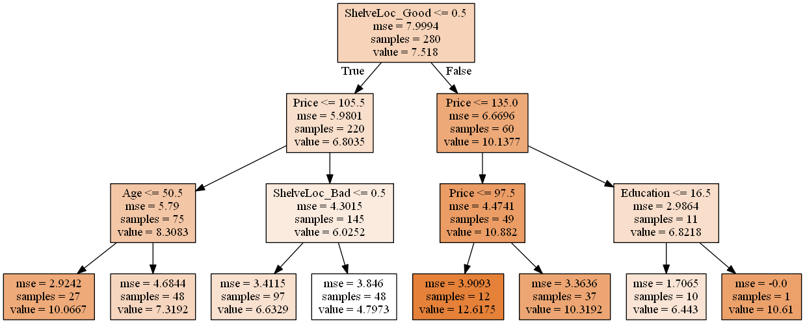

Exercise 8.8
import pandas as pd
import numpy as np
import pydotplus # Check the references if you need help to install this module.
import matplotlib.pyplot as plt
from sklearn.model_selection import train_test_split
from sklearn.tree import DecisionTreeRegressor, export_graphviz # References: download link and instructions to install Graphviz.
from IPython.display import Image # To plot decision tree.
from sklearn.externals.six import StringIO # To plot decision tree.
from sklearn.metrics import mean_squared_error
from sklearn.model_selection import GridSearchCV
from sklearn.ensemble import BaggingRegressor
from sklearn.ensemble import RandomForestRegressor
%matplotlib inline
df = pd.read_csv('../data/Carseats.csv')
df.head()
| Sales | CompPrice | Income | Advertising | Population | Price | ShelveLoc | Age | Education | Urban | US | |
|---|---|---|---|---|---|---|---|---|---|---|---|
| 0 | 9.50 | 138 | 73 | 11 | 276 | 120 | Bad | 42 | 17 | Yes | Yes |
| 1 | 11.22 | 111 | 48 | 16 | 260 | 83 | Good | 65 | 10 | Yes | Yes |
| 2 | 10.06 | 113 | 35 | 10 | 269 | 80 | Medium | 59 | 12 | Yes | Yes |
| 3 | 7.40 | 117 | 100 | 4 | 466 | 97 | Medium | 55 | 14 | Yes | Yes |
| 4 | 4.15 | 141 | 64 | 3 | 340 | 128 | Bad | 38 | 13 | Yes | No |
# Dummy variables
# Transform qualitative variables into quantitative to enable the use of regressors.
df = pd.get_dummies(df)
df.head()
| Sales | CompPrice | Income | Advertising | Population | Price | Age | Education | ShelveLoc_Bad | ShelveLoc_Good | ShelveLoc_Medium | Urban_No | Urban_Yes | US_No | US_Yes | |
|---|---|---|---|---|---|---|---|---|---|---|---|---|---|---|---|
| 0 | 9.50 | 138 | 73 | 11 | 276 | 120 | 42 | 17 | 1.0 | 0.0 | 0.0 | 0.0 | 1.0 | 0.0 | 1.0 |
| 1 | 11.22 | 111 | 48 | 16 | 260 | 83 | 65 | 10 | 0.0 | 1.0 | 0.0 | 0.0 | 1.0 | 0.0 | 1.0 |
| 2 | 10.06 | 113 | 35 | 10 | 269 | 80 | 59 | 12 | 0.0 | 0.0 | 1.0 | 0.0 | 1.0 | 0.0 | 1.0 |
| 3 | 7.40 | 117 | 100 | 4 | 466 | 97 | 55 | 14 | 0.0 | 0.0 | 1.0 | 0.0 | 1.0 | 0.0 | 1.0 |
| 4 | 4.15 | 141 | 64 | 3 | 340 | 128 | 38 | 13 | 1.0 | 0.0 | 0.0 | 0.0 | 1.0 | 1.0 | 0.0 |
# This function creates images of tree models using pydot
# Source: http://nbviewer.jupyter.org/github/JWarmenhoven/ISL-python/blob/master/Notebooks/Chapter%208.ipynb
# The original code used pydot instead of pydotplus. We didn't change anything else.
def print_tree(estimator, features, class_names=None, filled=True):
tree = estimator
names = features
color = filled
classn = class_names
dot_data = StringIO()
export_graphviz(estimator, out_file=dot_data, feature_names=features, class_names=classn, filled=filled)
graph = pydotplus.graph_from_dot_data(dot_data.getvalue())
return(graph)
(a)
# Split data into training and test set
X = df.ix[:,1:]
y = df['Sales']
X_train, X_test, y_train, y_test = train_test_split(X, y, test_size=.3, random_state=1)
(b)
# Fit regression tree
rgr = DecisionTreeRegressor(max_depth=3) # We could have chosen another max_depth value.
rgr.fit(X_train, y_train)
DecisionTreeRegressor(criterion='mse', max_depth=3, max_features=None,
max_leaf_nodes=None, min_impurity_split=1e-07,
min_samples_leaf=1, min_samples_split=2,
min_weight_fraction_leaf=0.0, presort=False, random_state=None,
splitter='best')
# Plot the tree
graph = print_tree(rgr, features=list(X_train.columns.values))
Image(graph.create_png())

Interpretation: According to the tree, ShelveLoc is the most important factor in determining Sales. Shelveloc is an indicator of the quality of the shelving location — that is, the space within a store in which the car seat is displayed — at each location. Cars with a good shelving location sell more (value = 10.1377) than cars in bad or medium shelving locations (value = 6.8035). Among each of these groups, Price is the second most important factor in determining Sales. For example, for cars with a good shelving location, when the Price is above 135, Sales decrease (6.8218 vs. 10.882). The same analysis logic applies for the remaining branches of the regression tree.
# Test MSE
print('Test MSE: ', mean_squared_error(y_test, rgr.predict(X_test)))
Test MSE: 4.72516600994
(c)
To determine the optimal level of tree complexity using cross-validation we will use GridSearchCV.
# Build a regressor
rgr = DecisionTreeRegressor(random_state=1)
# Grid of parameters to hypertune
param_grid = {'max_depth':[1,2,3,4,5,6,7,8,9,10]}
# Run grid search
grid_search = GridSearchCV(rgr,
param_grid=param_grid,
cv=5)
grid_search.fit(X_train, y_train)
GridSearchCV(cv=5, error_score='raise',
estimator=DecisionTreeRegressor(criterion='mse', max_depth=None, max_features=None,
max_leaf_nodes=None, min_impurity_split=1e-07,
min_samples_leaf=1, min_samples_split=2,
min_weight_fraction_leaf=0.0, presort=False, random_state=1,
splitter='best'),
fit_params={}, iid=True, n_jobs=1,
param_grid={'max_depth': [1, 2, 3, 4, 5, 6, 7, 8, 9, 10]},
pre_dispatch='2*n_jobs', refit=True, return_train_score=True,
scoring=None, verbose=0)
# Find the best estimator
grid_search.best_estimator_
DecisionTreeRegressor(criterion='mse', max_depth=5, max_features=None,
max_leaf_nodes=None, min_impurity_split=1e-07,
min_samples_leaf=1, min_samples_split=2,
min_weight_fraction_leaf=0.0, presort=False, random_state=1,
splitter='best')
The best value for max_depth using cross-validation is 5.
Note: Pruning is currently not supported by scikit-learn, so we didn't solve that part of the exercise.
(d)
# Fit bagging regressor
rgr = BaggingRegressor()
rgr.fit(X_train, y_train)
BaggingRegressor(base_estimator=None, bootstrap=True,
bootstrap_features=False, max_features=1.0, max_samples=1.0,
n_estimators=10, n_jobs=1, oob_score=False, random_state=None,
verbose=0, warm_start=False)
# Test MSE
print('Test MSE:', mean_squared_error(y_test, rgr.predict(X_test)))
Test MSE: 3.33869740833
Note: We didn't find a way to get variable's importance using scikit-learn, so we didn't solve that part of the exercise.
(e)
# Fit random forest regressor
rgr = RandomForestRegressor()
rgr.fit(X_train, y_train)
RandomForestRegressor(bootstrap=True, criterion='mse', max_depth=None,
max_features='auto', max_leaf_nodes=None,
min_impurity_split=1e-07, min_samples_leaf=1,
min_samples_split=2, min_weight_fraction_leaf=0.0,
n_estimators=10, n_jobs=1, oob_score=False, random_state=None,
verbose=0, warm_start=False)
# Test MSE
print('Test MSE:', mean_squared_error(y_test, rgr.predict(X_test)))
Test MSE: 3.23118576667
# Variable importance
importance = pd.DataFrame({'Importance':rgr.feature_importances_*100}, index=X_train.columns)
importance.sort_values('Importance', axis=0, ascending=True).plot(kind='barh', color='r')
plt.xlabel('Variable importance')
plt.legend(loc='lower right')
<matplotlib.legend.Legend at 0xec02978>

The test MSE decreased when compared with the previous answers. One possible explanation for this result is the effect of m. In random forests, the number of variables considered at each split changes. This means that, at each split, only a subset of predictors is taken into account. In some sense, this works as a process to decorrelate the decision trees. For example, in baggin, if there is a strong predictor in the data set, most of the bagged trees wil use this predictor in the top split. As a consequence, the predictions from the bagged trees will tend to be highly correlated. In random forests, this doesn't happen because the method forces each split to consider only a subset of the predictors. Hence, the method leads to models with reducted variance and increased reliability. That's a possible reason for the reduction verified in the test MSE value.
References
- https://packaging.python.org/installing/ (help to install Python modules)
- http://www.graphviz.org/Download..php (download Graphviz)
- http://stackoverflow.com/questions/18438997/why-is-pydot-unable-to-find-graphvizs-executables-in-windows-8 (how to install Graphviz)
- http://scikit-learn.org/stable/modules/tree.html (plotting decision trees with scikit)
2DO
- Pay attention during the review because the solutions that I've don't match with the existing solutions. I suppose that happens because of the randomness associated to the exercise, but I'm not sure.
- Find out how to get variable importance when using bagging.